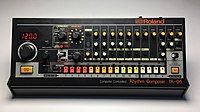

The Roland TR-808 Rhythm Composer, commonly known as the 808, is a drum machine manufactured by the Roland Corporation between 1980 and 1983. It was one of the first drum machines to allow users to program rhythms instead of using preset patterns. Unlike its nearest competitor at the time, the more expensive Linn LM-1, the 808 generates sounds using analog synthesis rather than by playing samples (prerecorded sounds).
Launched when electronic music had yet to become mainstream, the 808 received mixed reviews for its unrealistic drum sounds and was a commercial failure. After building approximately 12,000 units, Roland discontinued the 808 after its semiconductors became impossible to restock. It was succeeded by the TR-909 in 1983.
Over the course of the 1980s, the 808 attracted a cult following among underground musicians for its affordability on the used market, ease of use and idiosyncratic sounds, particularly its deep, booming bass drum. It became a cornerstone of the emerging electronic, dance, and hip hop genres, popularized by early hits such as "Planet Rock" by Afrika Bambaataa and the Soulsonic Force and "Sexual Healing" by Marvin Gaye.
The 808 was eventually used on more hit records than any other drum machine. Its popularity in hip hop has made it one of the most influential inventions in popular music, comparable to the Fender Stratocaster's impact on rock. Its sounds are included with music software and modern drum machines and it has inspired unlicensed recreations.
In the 1960s, drum machines were most often used to accompany home organs. They did not allow users to program rhythms,[2] but instead offered preset patterns such as bossa nova.[3][4] In 1969, the Hammond Organ Company hired the American musician and engineer Don Lewis to demonstrate its products, including an electronic organ with a built-in drum machine designed by the Japanese company Ace Tone.[2] Lewis was known for performances using electronic instruments he had modified, decades before the popularization of instrument hacking via circuit bending. He made extensive modifications to the Ace Tone drum machine, creating his own rhythms and wiring it through his organ's expression pedal to accent the percussion.[2]
Lewis was approached by Ikutaro Kakehashi, the president and founder of Ace Tone, who wanted to know how he had achieved the sounds using the Ace Tone machine.[2] In 1972, Kakehashi formed the Roland Corporation and hired Lewis to help design drum machines.[2] By the late 1970s, microprocessors were appearing in instruments such as the Roland MC-8 Microcomposer,[5] and Kakehashi realized they could be used to program drum machines.[6] In 1978, Roland released the CompuRhythm CR-78,[5] the first drum machine with which users could write, save and replay their own patterns.[6]
With its next machine, the TR-808, Roland aimed to develop a drum machine for the professional market, expecting that it would mainly be used to create demos.[7] The engineers conceived a "drum synthesizer" with which users could program drum sequences and edit parameters such as tuning, decay and level.[8] Though they aimed to emulate real percussion, the prohibitive cost of memory drove them to design sound-generating hardware instead of using samples (prerecorded sounds). Kakehashi purchased faulty transistors to create the machine's distinctive sizzling sound.[9] The chief engineer, Makoto Muroi, credited the 808 voice circuit design to "Mr. Nakamura" and the software to "Mr. Matsuoka".[6]
The 808 imitates acoustic percussion: the bass drum, snare, toms, conga, rimshot, claves, handclap, maraca, cowbell, cymbal and hi-hat (open and closed).[10] Rather than playing samples, it generates sounds using analog synthesis; the TR in TR-808 stands for "transistor rhythm".[11] The sounds do not resemble real percussion,[3][7] and have been described as "clicky",[7] "robotic",[9] "spacey",[4] "toy-like" and "futuristic".[3]Fact described them as a combination of synthesizer tones and white noise that resemble "bursts coming from the BBC Radiophonic Workshop" more than a real drum kit.[10]
The 808 is noted for its powerful bass drum sound, built from a sine oscillator, low-pass filter and voltage-controlled amplifier.[12] The bass drum decay control allows users to lengthen the sound, creating uniquely low frequencies that flatten slightly over time, possibly not by design.[12]The New Yorker described the bass drum as the 808's defining feature.[9]
The machine includes volume knobs for each voice, numerous audio outputs and a DIN sync port (a precursor to MIDI) to synchronize with other devices.[6] Its three trigger outputs can synchronize with synthesizers and other equipment.[16]
The 808 was followed in 1983 by the TR-909, the first Roland drum machine to use samples. Like the 808, the 909 was influential on popular music, influencing genres such as techno, house and acid.[14]
808 samples were included in ReBirth RB-338, an early software synthesiser developed by Propellerhead Software.[35] According to Andy Jones of MusicTech, ReBirth was "especially incredible" as the first software emulation of 808 sounds.[35] It was retired in 2017 as Roland said it infringed on its intellectual property.[35] Roland has included 808 samples in several drum machines, including its Grooveboxes in the 1990s.[14] Its TR-8[29] and TR-8S drum machines, released in the 2010s, recreate the sounds electronically rather than through sample playback.[36]
In 2017, Roland released the TR-08, a miniaturized 808 featuring an LED display, MIDI and USB connections, expanded sequencer control and a built-in speaker.[37] Roland released the first official software emulations of the 808 and 909 in 2018.[38] In 2019, Behringer released an unlicensed recreation of the 808, the Behringer RD-8 Rhythm Designer. Unlike Roland's TR-08 and TR-8S, which use samples and virtual synthesis to recreate the 808 sounds, the RD-8 uses analog circuitry.[39]

The TR-08, a miniaturized 808 reissue released in 2017